A Visual Journey
From Vectors to Intelligence

Paras Chopra
Founder & Researcher, Lossfunk
These models can write poetry, debug code, explain quantum physics, and pass the bar exam.
But what is actually happening inside?
"How is it that these models are doing these things that we don't know how to do? Imagine if some alien organism landed on Earth."
Chris Olah, Anthropic
Step 1
A vector is a list of numbers, a point in space.
Each number describes one feature.
Example: Describe a fruit[sweetness: 8, sourness: 2]
2 features: sweetness, sourness
3 features: + size
300 features: every shade of meaning
We can't visualize 300 dimensions, but the math works the same way.
2013: A Breakthrough
Tomas Mikolov (Google) showed that words could be represented as vectors, and that these vectors captured meaning.
Similar words cluster together in vector space.
Mikolov et al., "Efficient Estimation of Word Representations in Vector Space," 2013
Words that appear together should have similar vectors.
Words that don't co-occur should be pushed apart.
After billions of examples, the space self-organizes. Meaning emerges.
king − man + woman ≈ queen
Relationships become geometric operations in vector space.
Paris − France + Japan ≈ Tokyo
"There seems to be a constant male-female difference vector."
Chris Olah
Measure meaning by the angle between vectors.
Small angle → Similar
"happy" & "joyful"
90° → Unrelated
"happy" & "table"
Opposite → Antonyms
"happy" & "miserable"
LLMs don't process words. They process tokens (word pieces).
Every token maps to a point in a vast high-dimensional space.
"I like to think of the model as a one terabyte zip file. It's full of compressed knowledge from the internet."
Andrej Karpathy
Act II
We've seen how meaning becomes geometry.
Now let's open the black box.
2017: The Architecture
Every modern LLM uses the same pattern:
Attention → MLP → Attention → MLP → ...
repeated 32 - 120+ times
Vaswani et al., "Attention Is All You Need," 2017
Vectors flow through the model like a river.
Each layer reads from the stream, processes, and adds back.
Nothing is replaced entirely. Information accumulates.
In a database, you search for an exact match. Attention does something more powerful: soft matching.
Each token creates a Query ("what am I looking for?") and a Key ("what do I contain?").
The Query for "Paris" doesn't just match "Paris". It softly matches "Capital of France", "The city with Eiffel Tower", or even "Beautiful European city".
Soft matching lets the model find relevant context even when the words are completely different.
Each cell shows how much one token attends to another.
Multiple attention heads run in parallel, each looking for different relationships.
GPT-4 has 128 attention heads per layer, across 120+ layers.
Attention gathers context from other tokens. But where is the actual knowledge stored?
The MLP layer holds the model's learned facts and patterns. It reads the enriched representation and shifts it toward better predictions.
Attention decides what to look at. MLP decides what to do with what it sees.
The model converts its final vector into probabilities over the entire vocabulary.
Act III
The architecture exists. But how do random weights become intelligent?
"Because we did not build the thing, what we build is a process which builds the thing."
Ilya Sutskever
"You can think of training a neural network as a process of maybe alchemy or transmutation, or maybe like refining the crude material, which is the data."
Ilya Sutskever
Nobody programs an LLM. We set up conditions for intelligence to emerge from data + optimization.
The model learns by predicting the next word and being scored on how surprised it is.
Predicted "mat" at 90% → Loss = 0.10 (low surprise)
Predicted "mat" at 1% → Loss = 4.6 (extreme surprise!)
The logarithm makes the penalty extreme for confident wrong answers.
Training = finding the lowest valley in a vast mountain range.
SGD (Stochastic Gradient Descent) rolls a ball downhill with some randomness.
With billions of parameters, the landscape has an unfathomable number of dimensions. The optimizer navigates it using gradients.
Stage 1 of 3
"Predicting the next token well means that you understand the underlying reality that led to the creation of that token."
Ilya Sutskever
The base model has knowledge but doesn't know how to be helpful.
What is the capital of France?
What is the capital of Germany? What is the capital of Spain? ...
It just continues the pattern. It doesn't answer.
"At its core, a base model is just an expensive autocomplete."
Andrej Karpathy
Stage 2 of 3
Train on curated instruction-response pairs (~100K examples).
User: What is photosynthesis?
Assistant: Photosynthesis is the process by which plants convert sunlight into energy...
SFT teaches format and personality: the chat template. Much smaller data, but high quality.
"It's the human touch in post-training that gives it a soul."
Andrej Karpathy
Stage 3 of 3
| Stage | Data | Goal | Result |
|---|---|---|---|
| Pre-training | Trillions of tokens | Predict next word | Knowledge (raw) |
| SFT | ~100K curated pairs | Follow instructions | Conversational |
| RLHF | Human rankings | Align with values | Helpful & honest |
2024-2025
New paradigm: train models to think, not just respond.
GRPO (DeepSeek): eliminate the critic. Generate multiple answers, compare within the group.
For verifiable domains (math, code), no human judges needed. Just check: is the answer correct?
"This is also an aha moment for us, allowing us to witness the power and beauty of reinforcement learning."
DeepSeek team, on R1 spontaneously learning to reason
Act IV
What does the model actually learn? Can we peek inside?
May 2024: A Window Into the Mind
Anthropic found specific "features" inside Claude: directions in activation space that correspond to real concepts.
They found the Golden Gate Bridge feature cluster and amplified it to 10×.
What do you look like?
"I am the Golden Gate Bridge... my physical form is the iconic bridge itself"
First ever detailed look inside a production-grade LLM.
Anthropic, "Scaling Monosemanticity," May 2024
LLMs don't just predict one word at a time. They plan ahead.
Anthropic found that when Claude writes a rhyming couplet, it decides the rhyming word early on, then builds the rest of the line to reach it.
The model doesn't just react word by word. It builds a plan across multiple tokens before committing to output.
Anthropic, "On the Biology of a Large Language Model," 2025
When Claude thinks, it thinks in concepts, not words.
The model has a universal "language of thought" that transcends any specific language.
Act V
These models are powerful, but imperfect in surprising ways.
"The strange, unintuitive fact that state of the art LLMs can both perform extremely impressive tasks while simultaneously struggle with some very dumb problems."
Andrej Karpathy
LLMs take shortcuts instead of truly generalizing. When the shortcut works → brilliant. When it doesn't → foolish.
Current LLMs are frozen after training. How do we let them keep learning without forgetting? Catastrophic forgetting remains unsolved.
Do LLMs build internal models of reality, or just learn surface statistics? Can we train models that truly understand causality and physics?
GPT-4 training cost ~$100M+ in compute. Human brains run on 20 watts. Can we close this gap? Data efficiency is equally critical: children learn language from far less data.
These aren't just engineering problems. They're fundamental questions about the nature of learning and intelligence.
"The 2010s were the age of scaling, now we're back in the age of wonder and discovery once again."
Ilya Sutskever
Old paradigm:
Bigger model + More data → Better
New paradigm:
Same model + More thinking + Better RL → Better reasoning
"If the benefits of the increased productivity can be shared equally, it will be a wonderful advance for all of humanity."
Geoffrey Hinton, Nobel Prize Speech, 2024
Papers
Mikolov et al., "Word2Vec" (2013)
Vaswani et al., "Attention Is All You Need" (2017)
Brown et al., "GPT-3" (2020)
Ouyang et al., "InstructGPT" (2022)
Elhage et al., "Toy Models of Superposition" (2022)
Templeton et al., "Scaling Monosemanticity" (2024)
DeepSeek, "DeepSeek-R1" (2025)
Anthropic, "Biology of an LLM" (2025)
Anthropic, "Circuit Tracing" (2025)
Visual Guides & Blogs
Jay Alammar, "The Illustrated Transformer"
3Blue1Brown, "But What Is a GPT?"
Chris Olah, colah.github.io
Andrej Karpathy, "Software 2.0"
Chip Huyen, "RLHF Explained"
Ethan Mollick, "Jagged Frontier"
People Quoted
Ilya Sutskever · Andrej Karpathy · Chris Olah
Geoffrey Hinton · Jay Alammar · DeepSeek team